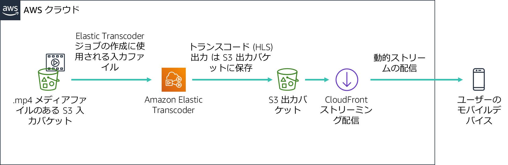

このラボでは、Amazon CloudFront で Apple の HTTP Live Streaming (HLS) プロトコルを使用して、接続されたデバイスに動的な複数のビットレートストリームを配信します。ストリームは HLS プロトコルをサポートする任意のブラウザで再生できます。このラボでは Amazon Elastic Transcoder を使用して、ソースビデオを複数のビットレートに変換し、CloudFront を使用して配信します。
このラボを完了すると、次のことができるようになります。
ラボの終了時のアーキテクチャは次の例のようになります。

このラボの所要時間は約 30 分です。
このラボ環境では、AWS のサービスとサービスアクションへのアクセスが、ラボの手順を完了するために必要なものに制限されています。他のサービスへのアクセスや、このラボで説明されているサービス以外のアクションを実行しようとすると、エラーが発生することがあります。
この手順の上部にある Start Lab をクリックし、ラボを起動します。
[Start Lab] パネルが開き、ラボのステータスが表示されます。
ヒント: ラボの完了までにさらに時間が必要な場合は、Start Lab ボタンをもう一度選択して、この環境のタイマーを再開します。
[Start Lab] パネルに Lab status: ready というメッセージが表示されたら [X] をクリックしてパネルを閉じます。
この手順の上部にある AWS をクリックします。
このアクションにより、新しいブラウザタブで AWS マネジメントコンソールが開き、ユーザーは自動的にログインします。
ヒント: 新しいブラウザタブが開かない場合、通常、ブラウザによってサイトのポップアップウィンドウの表示がブロックされたというメッセージが表示されたバナーまたはアイコンがブラウザの上部に表示されます。バナーまたはアイコンを選択して [ポップアップを許可] を選択してください。
AWS マネジメントコンソールタブがこの手順と並べて表示されるようにします。両方のブラウザタブを同時に開いておくと、ラボのステップを実行しやすくなります。
特に指示がない限り、リージョンを変更しないでください。
このラボでは、サンプルビデオファイルを使用して動的ストリームを設定します。便宜上、Amazon Simple Storage Service (Amazon S3) バケットはすでに作成されています。
AWS マネジメントコンソールの [サービス] で [S3] をクリックします。
awstrainingreinvent という文字列を含む S3 バケットが存在する必要があります。バケットがあるリージョンを書き留め、そのバケットを開きます。
inputフォルダを開きます。これには AmazonS3Sample.mp4 という名前のビデオファイルが含まれます。
注: Amazon S3 コンソールにログインしてから、ファイルが S3 バケットに表示されるまでに最大 10 分かかる場合があります。表示されない場合は、画面の右上にある円形の矢印アイコンを選択して、バケットのコンテンツを更新します。
このタスクでは、Amazon CloudFront ディストリビューションを作成します。このディストリビューションは、Amazon Elastic Transcoder によって生成された複数のビットレートファイルをエンドユーザーのデバイスに配信するために使用されます。
[サービス] で [CloudFront] をクリックします。
[Create Distribution] をクリックします。
[Web] セクションで [Get Started] をクリックします。
[Origin Settings] セクションで、次の情報を入力します。
ページの下部にスクロールし [Create Distribution] をクリックします。
このセクションでは、入力ファイルをトランスコードするためのジョブを管理するパイプラインを作成します。
AWS マネジメントコンソールの [サービス] で [Elastic Transcoder] をクリックします。
Amazon Elastic Transcoder コンソールのナビゲーションバーで、S3 バケットが作成されたリージョンと同じリージョンをクリックします。
[Create a new Pipeline] をクリックします。
[Pipeline Name] に InputPipeline と入力します
[Input Bucket] で awstrainingreinvent S3 バケットを選択します。
[IAM Role] で [Other roles] で [AmazonElasticTranscoderRole] を選択します。これは、管理ポリシー AmazonElasticTranscoderRole を使用するこのラボの CloudFormation テンプレートで事前に作成されたロールです。Elastic Transcoder サービスでは、ラボアカウントの Amazon S3 および Amazon Simple Notification Service (Amazon SNS) リソースにアクセスするために、このロールを設定します。
[Configuration for Amazon S3 Bucket for Transcoded Files and Playlists] セクションで、次の情報を入力します。
[Configuration for Amazon S3 Bucket for Thumbnails] セクションで、次の情報を入力します。
[Create Pipeline] をクリックします。
このセクションでは、先ほど作成した Amazon Elastic Transcoder パイプラインの下にジョブを作成します。このジョブでは、選択した複数のビットレートに入力ファイルをトランスコードする作業を行います。
[Pipelines] ページで [Create New Job] をクリックしてトランスコーディングジョブを作成します。ビデオファイルのトランスコードに使用するパイプライン（キュー）にジョブを作成します。
[Pipeline] で、[InputPipeline] を選択します。
[Output Key Prefix] に、output/ と入力します。
Amazon Elastic Transcoder では、ジョブで作成されるすべてのファイル（出力ファイル、サムネイル、プレイリストなど）の名前の前にこの値が付加されます。
[Input Key] で、input/AmazonS3Sample.mp4 というラベルの付いた入力ファイルを選択します。
このセクションの設定によって、作成される出力ファイル（ビットレート）の数が決まります。このデモでは、3 つの個々のビットレート（2 Mbps、1.5 Mbps、1 Mbps）で 3 つの出力ファイルを設定します。出力ビットレートごとに、個別の出力詳細セクションを作成する必要があります。これにより、各ビットレートのプレイリストファイルも出力され、ストリームを構成するすべてのセグメントがリストされます。
[Preset] で、[System preset: HLS 2M] を選択します。
[Segment Duration] に 10（HLS のデフォルト）を入力します。
[Output Key] に、HLS20M などの一意のプレフィックスを入力して、このプリセットを使用して作成したセグメントに名前を付けます。
[+ Add Another Output] をクリックし、上記のステップを繰り返して、プリセット HLS 1.5M と HLS 1M のセグメントを生成し、それぞれのプレフィックス名を次のように指定します。
HLS15MHLS10Mプレイリストではすべての個々のビットレートのプレイリストを結合し、ストリームを再生するデバイス用の単一の URL を提供します。プレイリストを設定するには、次の操作を行います。
[Playlists (Adaptive Streaming)] で、[Add Playlist] をクリックし、次のように設定します。
primary前のセクションで入力した 3 つの出力をすべて選択し、[+ Add Playlist] のオプションを選択してこのプレイリストに含めます。（ドロップダウンメニューの横にある「+」を押してください）
[Create new job] をクリックします。
トランスコーディングプロセスは 1 分以内に完了します。
このモジュールでは、iOS または Android デバイスを使用して、前のセクションで生成された動的ストリームの再生をテストします。Android 4.x デバイスを使用して、以下の演習をテストすることもできます。
注 一部のブラウザでは、この機能をサポートしていない場合があります。デバイスのデフォルトの ウェブブラウザを使用してテストします。
Amazon CloudFront を通じて再生される再生 URL は、次の 2 つのコンポーネントで構成されています。
Amazon CloudFront ドメイン名
S3 バケット内のプレイリストファイルのパス（Elastic Transcoder によって生成された出力）
http://<CloudFront domain name>/<playlist file path in Amazon S3 bucket>Amazon CloudFront ドメイン名を取得するには、次の操作を行います。
プレイリストのファイルパスを取得するには、次の操作を行います。
これは、モバイルデバイス上で再生されるファイルです。
次に、CloudFront からファイルへの URL を作成する必要があります。
/output/primary.m3u8 を追加して URL を作成します。新しいURLは次のようになります: d1ckwesahkbyvu.cloudfront.net/output/primary.m3u8
iOS または Android デバイスのデフォルトのブラウザに URL を入力します。モバイルデバイスがない場合は、コンピュータのブラウザに URL を入力します。
モバイルデバイスで動画を再生する場合は、標準データレートが適用される場合があります。
ストリームの再生はデバイスで開始され、帯域幅と CPU 条件に基づいて、関連するセグメントを動的にリクエストする必要があります。
Amazon S3、Amazon Elastic Transcoder、Amazon CloudFront などの AWS サービスを一緒に使用して HLS メディアファイルを iOS または Android デバイスに配信する方法を学びました。
以下の作業が完了しました。
ヒント: 作業内容は何度も送信できます。作業内容を変更したら、再度 [Submit] をクリックします。最終送信分がこのラボの作業内容として記録されます。
お疲れ様でした。以上でラボは終了です。
パネルに DELETE has been initiated... You may close this message box now というメッセージが表示されます。
©2020 Amazon Web Services, Inc. and its affiliates. All rights reserved. このトレーニング内容の全体または一部を複製または再配布することは、Amazon Web Services, Inc. の書面による事前の許可がある場合を除き、禁じられています。商業目的のコピー、貸与、または販売を禁止します。